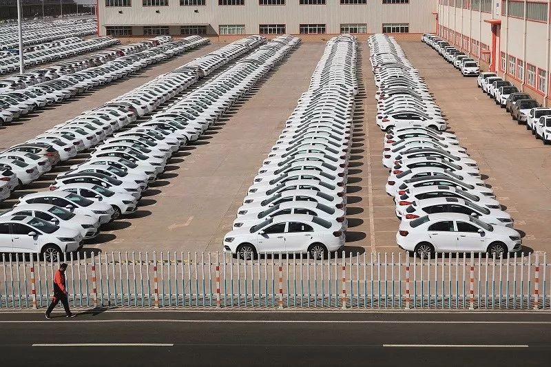
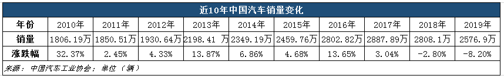

专访浙大教授王立铭：应对疫情需要科学把关
原文链接 备份链接 要高度重视科学教育和科学思维的培养。面对复杂世界的未知难题，碰到一个像新冠肺炎这样的新问题，我们得学会首先从科学的角度想，它是怎么一回事，然后怎样按照科学规律去应对和预测 新冠病毒模型。图片来源/美国CDC 文 |《财 …
以下文章来源于出行一客 ，作者施智梁团队
[
出行一客
《财经》杂志交通工业组创建，专注于交通出行领域新闻。在这里，我们将带你联结出行、科技与未来。](#)

全球车企开始联盟整合，中国几十上百家汽车制造企业的局面将被打破。小公司生存更艰难，大公司有兼并红利。线上售车等新渠道新业态可期

图/中新
文 |《财经》记者 王斌斌 李皙寅
编辑 | 施智梁
空空荡荡的街道上，门可罗雀的4S店透出目前中国车市的寒冷。
同比下滑92%，这个是2020年2月前两周的零售数据，断崖式的跌幅冲击着车企与经销商的信心，“再这样下去容易出问题。”一位经销商对《财经》记者直言，很多企业会撑不住。
原本在2019年四季度车市开始转暖的势头被打断，让业内诸多专家对2020年的中国车市更加悲观，2%、5%甚至10%的下滑都有人预测。政府也开始救市，商务部表态将促进汽车消费。
市场可以悲观，不应该绝望，汽车电商、线上购车、直播卖车等新渠道新业态开始萌发，寒冬中汽车业的整合阻力也会小很多。历劫过后，这何尝不是一次机遇？

冻结的车市
坐在二楼的办公室里，上海一位豪华车经销商总经理透过窗栅看向展厅，返程的员工们士气不佳。虽然，上海已经阳光明媚，但消费者心中仍有忌惮，嘴里念着安全第一，一天下来进店客户仍是寥寥无几。
“这波很多企业会撑不住的。”他在电话那头叹了口气，对《财经》记者说，想到包括人工在内的运营成本，加上库存车辆的背后的资金沉淀，再这样下去容易出问题。
经销商的担忧不无道理。乘联会提供的数据显示，2020年2月前两周的市场零售基本处于冰封状态，数据惨淡，第一周日均销售仅811辆，第二周日均零售4098辆，前两周总体同比下滑92%。
各地经销商的开业数量少，经销店客流很少，只有特别急迫的购车需求，消费者才在疫情期间购车。
不止是消费者，经销商更希望安全。一位国资背景的经销商销售负责人坦言，相比赚钱，“店里不要出事儿最重要”。这段时间店里施行值班制，有意减少人员聚集。
为了满足上级部门要求，该经销商临街的店门已被关闭，顾客只能从边门进入，这些人还需要额头上“来上一枪”。
这位负责人表示，现在大家拿着“最低收入”过活的时候，才明白啥叫“黑天鹅”，日常现金流正常太重要了。
在这一背景下，还有消费者试图“雪上加霜”。“我们全员都在帮忙打催收电话。”一位主机厂汽车金融公司的员工对《财经》记者透露，此前他打了将近200个电话，大多是逾期时间不长的客户，安抚他们的同时强调要正常还款。
在他看来，车贷公司最怕有人在刻意“撸口子”，带有恶意地逾期贷款，试图拖倒公司以便逃脱追缴。一天下来，他也是一肚子气，有的客户以国家让我待在家的名义，拒绝按期还贷，说得理直气壮。
销量遇到困难，汽车产能也在下滑。根据中国汽车工业协会公布的数据，截止2月12日，全国183个整车生产基地中，已有59个基地开始复工复产，占32.2%。在此之后更多车企复工，但是产能相较以往减少很多。
一家国内销量前三的汽车公司员工告诉《财经》记者，他们的工厂复工，但考虑到防防疫需要人员不能密集，以及销售等因素，工厂从原来的三班倒减少为一班。
由于工作日减少、工人复工时间不定、供应链也受影响等因素，瑞银汽车行业分析师鞏旻预计，今年一季度中国汽车产能将下降20%甚至更多。
销量难现SARS后的爆发
新冠肺炎疫情很容易让人联想到2003年的SARS疫情。
在2003年，SARS疫情触发了老百姓对私密出行空间安全性的向往，当年轿车市场二季度同比增长近70%，三季度也同比增长超过50%。
此一时彼一时。十七年前中国的汽车保有量只有2400万辆，首次购车率95%以上，公众在认识到私家车的出行安全性之后，加速引爆了中国的汽车消费。如今一年的汽车销量就有2000多万辆，而且换购和复购的消费者比例明显提高。和SARS之后相比，现在的汽车不再是必需品。
正如安永合伙人叶亮所言，二、三季度可能会迎来一波需求反弹和释放，因为私家车的安全性和便利性受到重视，但今时不同往日，消费增加不意味着逆转爆发 ，疫情对 2020 年整体车市仍然是弊大于利。
中汽协的调查结果同样也不乐观。中汽协透露，他们调研了300多家整车和零部件企业，但反馈的信息综合分析表明，本次疫情对中国经济的短期影响大于2003年的非典，对于本来处于调整期的汽车行业影响更大。
疫情影响下，2020年的车市或许会变得更糟。
2019年四季度，中国车市已经从近两年的下跌中呈现出止跌回暖的迹象。但这一回暖势头被疫情打断。
具体来看，2019年2月是春节，2020年春节在1月，如果没有疫情，本应该是1月同比下跌，2月同比上升。但受疫情影响，中国乘联会秘书长崔东树表示1-2月份受疫情影响，中国车市下滑幅度可能在25%-30%左右。
长安汽车执行副总裁也表示，若疫情在一季度末得到控制，4-6月市场开始逐步恢复，预计全年狭义乘用车同比下降约5%。
贝恩咨询认为，若不考虑政策等额外利好因素，疫情若能在一季度结束，服务业及中小企业从业者的消费力损失可控，全年新车销售仍有望与去年持平；如疫情持续时间更长，导致整体经济和消费力进一步承压，悲观情景下新车销售将可能面临10%甚至更多下跌。
与此同时，行业协会也在呼吁新政。中国汽车流通协会呼吁，打破部分城市实施的限购、限行；同时，助力二手车交易，从而提振新车销售。中国汽车工业协会则向有关部门建议全国范围内实施国六排放标准。
此前，鞏旻对《财经》记者表示，他预计政府不会出台特别强的刺激汽车消费的政策。但结果是他低估了汽车行业的重要性，救市政策开始逐步推出。
2月20日，商务部市场运行司副司长王斌在新闻发布会上表示，将深入贯彻落实中央关于“积极稳定汽车等传统大宗消费”的重要决策部署以及《国务院办公厅关于加快发展流通促进商业消费的意见》精神，会同相关部门研究出台进一步稳定汽车消费的政策措施，减轻疫情对汽车消费的影响。
同时，鼓励各地根据形势变化，因地制宜出台促进新能源汽车消费、增加传统汽车限购指标和开展汽车以旧换新等举措，促进汽车消费。
但这样的表态与政策目前来看杯水车薪，如果疫情短期未得到有效控制，市场和专业人士目前呼吁的更多更强力政策或许正在路上。
危中寻机
“一个春节马路上空空荡荡，天气照样雾霾，能不能别再让汽车背锅。”天津一家美系车经销商店总直言，虽然厂家给了支持，但归根结底，开源最重要。
唇亡齿寒，主机厂在给予经销商包括调整绩效考核机制、增加免息期等方式，帮忙经销商克服难关。
疫情期间，各大车企展开了对线上营销模式及线下“无接触模式”的探索，“汽车直播”、“云看车”、“零接触”开拓了汽车经销的新场景，利用互联网的数字化工具箱，车企开始进行汽车销售端的线上化尝试。
虽然难比SARS之后的爆发，不过新冠肺炎疫情期间，老百姓乘坐公共交通受限，放大了私家车安全私密移动空间的优势。咨询公司威尔森在报告中指出，被抑制的购车需求后移，将会促进无车用户首次买车，线上的需求会提升显著。
确实，消费者大多憋在家里，但这并没有封堵意向消费者买车的心。
因此，汽车电商再度活跃起来，不同以往的是，这次更多店里的销售顾问，开始上网扮演网红“李佳琦”，搞起汽车带货。
“再不突破，连土都没得吃了。”名为“福州福瑞林肯梅桂说车”的主播对《财经》记者直言，从没想过汽车也能直播带货，但想着就算不能卖车，也能做宣传的心态，在直播中多些幽默、认真，让他建立了直播团队，还有了粉丝团。
线上平台打破了地域限制，这对身处疫区一线的湖北经销商来说，堪称雪中送炭。
“说到底，大部分人是被逼的。”麻瓜说车，线上是懂车帝平台上的主播；线下是湖北武汉一自主品牌经销商的投资人兼总经理，他对《财经》记者坦言当市场部、销售顾问都不好意思后，自己是被迫当“网红”的。
每天在家里，举着平板给看不到的观众展示车型，一天七小时的自说自话。从最开始怕冷场的尴尬，到假想观众在眼前，从被观众带着走，到主动带节奏。经过持续努力，有意向客户说解封后来看车，保有用户说届时来修车。有趣的是，他还帮助其他地区的经销商同行介绍销售线索。
在中国汽车流通协会会长沈进军看来，伴随着这次疫情的慢慢退去，很多新的营销方式以及业态会涌现出来。“通过一个事件可以将整个行业的格局重塑。”
这个格局重塑，或许不只是汽车电商或者说线上、线下购车的打通，更大的机遇来自于国内汽车厂商的重组与整合。
随着中国汽车业的发展，很多中小车企应运而生，也顺着趋势赚了钱，但是在全球车企开始联盟整合的大趋势下，中国几十上百家汽车制造企业显得与众不同。
在加剧的汽车寒冬下，汽车行业优胜劣汰，各大车企之间的兼并重组、联盟合作可以更顺利的开展。或许有些残酷，但确实也是中国汽车做大做强的机遇。


▲点击图片查看更多疫情报道
责编 | 黄端 duanhuang@caijing.com.cn
本文为《财经》杂志原创文章，未经授权不得转载或建立镜像。如需转载，请在文末留言申请并获取授权。
原文链接 备份链接 要高度重视科学教育和科学思维的培养。面对复杂世界的未知难题，碰到一个像新冠肺炎这样的新问题，我们得学会首先从科学的角度想，它是怎么一回事，然后怎样按照科学规律去应对和预测 新冠病毒模型。图片来源/美国CDC 文 |《财 …
原文链接 备份链接 燃财经（ID:rancaijing）原创 作者 | 闫丽娇 编辑 | 阿伦 疫情对各行各业都产生了巨大影响，尤其是在企业用工方面。由于人力严重不足，人力使用效率变得异常关键。更少的人意味着需要更敏捷、更高效的组织方式。 …
原文链接 备份链接 2020年杭州帕勒芒行动者首次活动结束征集。本次活动的主题是《疫情之下的众生相》。这段时间由于疫情的影响，大家日常的生活节奏和习惯都一定程度上被打破，心情也不免蒙上一层阴影。相信这段时期对于大家来说都是一个特殊的经历， …
原文链接 备份链接 摘要：本文为“2020，我们的生活在继续”征文大赛的投稿作品。2020年，本来是计划中作为人生转型的一年。疫情一来，一切都变成了问号。 随着不能出门的日子越来越长，我的失业焦虑也愈发严重。 时至今日，已经是我在家中无 …
原文链接 备份链接 这题来自Voicer，他们采访了包括我们在内的6位创意行业内不同分支的同侪，分享了这次疫情对他们的影响以及他们相应的思考和应对策略。 深度专访：疫情之下的创意从业者，你们还好吗？ 而在这个心情极其复杂的超长春节里，我 …